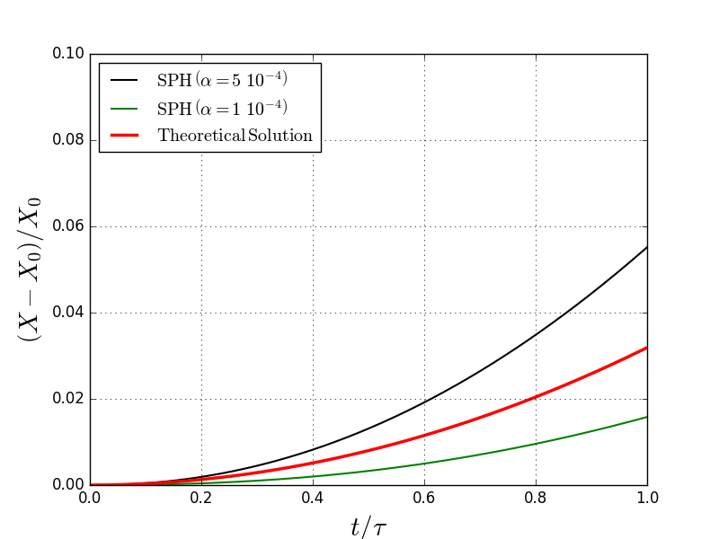
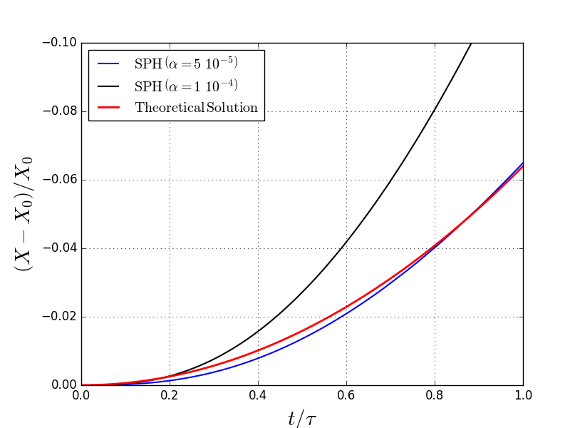

XII SPHeric Conference Ourense 2017
A single-phase SPH model for evaporation and condensation phenomena
| Daniel Duque |
Javier Calderon-Sanchez javier.calderon@upm.es Universidad Politécnica de Madrid 15/06/2017 |
Antonio Souto-Iglesias |
Why?
Thermal effects induce evaporation-condensation
Rates of evaporation and condensation depend on tank pressure
When sloshing, pressure variations can be significant, and modify such rates
Therefore, an accurate prediction of these is necessary
So, which is the approach to follow?
The method: 1D Stefan Problem Benchmark
Gas phase
\[ \frac{dT_{\mathrm{gas}}}{dt} = \frac{q_{\mathrm{w}} \ A_{\mathrm{q}}}{C_{\mathrm{v}} \ m_{\mathrm{gas}}} \]
\[ p_{\mathrm{gas}} = \rho_{\mathrm{gas}}\ R_{\mathrm{gas}}\ T_{\mathrm{gas}} \]
\[ \frac{{dT_{\mathrm{sat}}}}{dt} = \frac{q_{\mathrm{iv}} A_{\mathrm{int}}}{C_{\mathrm{l}} \ m_{\mathrm{int}}} \]
\[ p_{\mathrm{sat}} = \exp \left[ - \left(\frac{\Delta H_{\mathrm{v}}}{R_{\mathrm{gas}}}\right) \frac{1}{T_{\mathrm{sat}}} + B\right] \]
In order to perform the mass transfer between the phases
\[ \dot{m} = A_{int} \sqrt{\frac{M}{2\pi R_{\mathrm{u}}}} \left( \color{red}{\alpha_{\mathrm{e}}} \frac{p_{\mathrm{sat}}}{\sqrt{T_{\mathrm{sat}}}} - \color{red}{\alpha_\mathrm{{c}}} \frac{p_{\mathrm{gas}}}{\sqrt{T_{\mathrm{gas}}}}\right) \]
Hertz-Knudsen relation
Results: 1D Stefan Problem Benchmark
 What happens with $\alpha$?
$\alpha$ is a coefficient that accounts for the efficiency of the mass transfer. Should be $\leq$ 1
| Work | $\alpha$ | T (K) |
|---|---|---|
| Rideal (1925) | 0.003 | |
| Hagen et al (1989) | 0.01 - 0.1 | 282 - 293 |
| Shaw \& Lamb (1999) | 0.04 - 0.1 | 238 |
| Bulba (2015) | $10^{-4}$ | 313 |
Applicability
Thanks for your attention